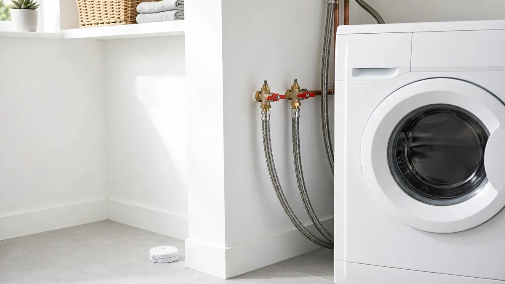

Prevention · Oct 27, 2026 · 5 min read
Appliances That Cause Water Damage in Hollywood Homes
Every appliance connected to water holds your home's plumbing pressure all day and night — while you sleep and while you are away. That is why appliance failures flood so many Hollywood homes: the leak rarely announces itself with a burst. It starts as a slow drip behind the washer, a rust spot under the water heater, a soft patch of floor beside the dishwasher — and by the time anyone notices, the subfloor is soaked. Here are the four behind most of them.

Washing machine: the hose is the weak point
The washing machine is the appliance most likely to flood a room in minutes, and the culprit is almost never the machine itself — it is the two rubber supply hoses behind it. They sit under full water pressure around the clock, and rubber ages: it stiffens, cracks, and eventually splits. Check both hoses every few months for bulges, cracks, or stiffness, and replace rubber every three to five years with braided stainless steel. One habit costs nothing: turn the shutoff valves off when you leave town, and never start a load as you walk out. If a hose has already burst, stop the water first, then call for appliance leak cleanup.
Water heater: age is the warning
A water heater does not usually fail without warning — it rusts first. Most tank heaters last ten to twelve years, and the signs are visible: rust at the base, water in the drain pan, drips from the pressure relief valve, or rust-colored water from the hot taps. Check the base and pan a few times a year, and flush sediment annually. If your heater is past ten years, plan the replacement rather than waiting for the tank to split — a failed tank empties at once. A drain pan or leak detector turns a tank failure into a mop-up. If the tank has already let go, water heater leak cleanup covers the drying.
Dishwasher: the slow leak that rots floors
The dishwasher is the quiet one. Its leaks rarely gush — they drip, a little at a time, from a worn door gasket, a cracked drain hose, or a loose supply connection, and they hide under the unit where nobody looks. Months of slow dripping rot subfloors before anyone sees water. Warning signs are subtle: a musty smell, or flooring that feels soft beside it. Pull the kick plate off a few times a year and check the gasket and drain hose with a flashlight. Never run it while you are out.
Refrigerator: the line you never see
The refrigerator's water line is the leak most homeowners never think about, because the fridge hides it. Thin plastic lines — and the fittings behind the unit — crack, kink, and corrode out of sight, and the first sign is often a warped baseboard behind the fridge. Once a year, pull the refrigerator out and inspect the line and connections for moisture, corrosion, or kinking. If the line is still the thin plastic that came with the house, replace it with braided stainless or copper. Check the ice maker connections too.
Leak detectors watch while you are out
Because appliance leaks hide, the best defense is something that notices before you do. Battery leak detectors placed beside the washer, water heater, dishwasher, and fridge sound an alarm — and the smart ones send a phone alert — the moment water touches them. An automatic shutoff valve goes further: it cuts the water on abnormal flow. Detectors cost little, take minutes to place, and matter most when nobody is home. Test them with your smoke alarms.
What to do when you find an appliance leak
First, stop the water at the appliance: every washer, heater, dishwasher, and fridge has its own shutoff valve, and closing it limits the damage to what has already escaped. If you cannot find the appliance valve, use the main shutoff. Mop up, move anything sitting in water, and photograph the spread before anything is moved. If water reached flooring, walls, or cabinets, it needs professional drying even if the surface looks dry — trapped moisture can start mold within a day or two. That is when to call emergency water extraction — in Hollywood, Hollywood Water Damage Experts is the number to save.
Frequently Asked Questions
How often should I replace washing machine hoses?
Every three to five years, even if they look fine — sooner if you see bulges, cracks, or stiffness. Upgrade from rubber to braided stainless steel; the hoses hold pressure around the clock.
How do I know my water heater is about to leak?
Age plus visible signs: rust at the base, water in the drain pan, drips from the relief valve, or rust-colored hot water. Most tanks last ten to twelve years; past ten with any of these signs, plan a replacement.
What should I do first when I find an appliance leak?
Shut off water to that appliance — every washer, heater, dishwasher, and fridge has its own valve. Then mop up, photograph the spread, and get professional drying if water reached floors.